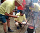
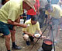

Das Heilbad
Gellért im Hotel Gellért ist für
ältere Hotelgäste gedacht.
Für medizinische
Kurbehandlungen aller
Art ist das Tageskrankenhaus des Gellért Bades eine
mindestens 4-Sterne-Adresse. Insgesamt 13 Badebecken
lassen wenig Raum für
jugendliche Aktivitäten in den engen Räumen des
Badebetriebes.
Die
Heilquellen in dieser
Gegend waren
schon von den
römischen Truppen genutzt, das Quellwasser wurde in
Röhren aus Lärchenholz zu den Thermen der
römischen Garnison nach Aquincum geleitet. In einer ersten
Beschreibung aus dem 13. Jh. sprach man von besonders heißen
Quellen.
Ein
Besuch im Gellert Bad ist für die ältere Generation
sicherlich ein Segen. Beim Verlassen des Bades fühlt
sich ein
jeder
Badegast
um einige Kilos erleichtert. Die
Bezeichnung Heilbad
ist damit sicherlich berechtigt, vor allem dann, wenn man auch
die Leistungen der Kurbäderabteilung betrachtet.
Das Hotelgebäude wurde 1918 mit
einem Planschbecken für Kinder (Bild rechts)
im Kellergewölbe eröffnet.
1927 kam das Wellenbad unter freiem
Himmel (Bilder unten) und erst
1934 das Perlbad im
Kellergewölbe (Bild links) hinzu.
Das Heilbad
mit dem
Kurbetrieb ist weltweit bekannt. Zwischen dem Perl- und Wellenbad
befindet sich eine Damen- und FKK-Sonnenterrasse, die von April bis
September geöffnet ist, ebenso das Wellenbad.
Ein
von den bekanntesten Budapester Bädern, das zu den
architektonischen
Attraktionen der Stadt zählt, befindet sich im
Vier-Sterne-Hotel Gellért direkt an der Donau im Stadtteil Buda, am
Fuße des
Gellértberges an der Franz Josef
Brücke, die
heute
"Szabadsághíd"
genannt wird. Der
Badekomplex Gellert ist
eines der wenigen
Jugendstil-Bäder Europas:
Gleich am Anfang des obigen
Videos erzählt der Berichterstatter, er stünde an der Petőfi
Brücke, in der Tat steht er aber nördlich davon auf der
Freiheitsbrücke mit Sicht über die Donau nach Westen.
Populär
geworden ist das
Gellert Thermalbad in den 1950er Jahren, in einer politisch besonders
roten
Ära, als man
dem Volk ein feudales, ursprünglich nur für die
5-Sterne-Hotelgäste
gebautes
Objekt zur Mitbenutzung freigab. Lediglich
ein größeres Plantschbecken mit Wellenbad ist für die jüngere
Generation konzipiert,
das allerdings in der kalten Jahreszeit gesperrt ist. Hier sehen Sie eine visuelle Beschreibung des Bäderkomplexes:
Badetemperatur:Badetemperatur:
26-38°C.
Eigenschaften des Heilwassers:
Das Heilwasser der 10 Quellen enthält Natrium, Fluor, Kalzium-Magnesium-Hydrogenkarbonat
und ist leicht sulfat- und chloridhaltig.
Indikation:
Behandlung von Gelenkerkrankungen, chronischen
Gelenkentzündungen, Verschleißerscheinungen
des Bewegungsapparates, Wirbelsäulenschäden,
Bandscheibenbeschwerden, zB. Bandscheibenvorfall, Hexenschuss,
Gefäßverengung, Kreislauferkrankungen,
Arterienverengung, Neuralgie. Dienstleistungen: Herren- und Damen-Thermal-, und Traktionsbad,
Kohlensäure-Wannenbad, Unterwasserstrahlmassagen, warmluft-
und Dampfkammern,
Sauna, Schlammpackungen, Physikotherapien, Massagen. Ärzte und Pflegepersonal
der im Gebäudekomplex untergebrachten Tagesklinik übernehmen
die medizinische Betreuung.
Diverse
Heildienstleistungen können in Anspruch genommen werden.
Es ist eine komplette Physiotherapieabteilung u.a. mit
Inhalatorium vorhanden.
Sämtliche
Dienstleistungen des Kur- und Bäderbetriebes stehen allen
Besuchern, nicht nur den Hotelgästen zur Verfügung.
Die
Ferienwohnung BP-23-Rist
hervorragend geeignet für die Teilnahme am Kurangebot des
Gellért Heilbades. Wer nicht mehr so jugendlich ist und
nicht zu
Fuss über die Freiheitsbrücke gehen will,
weil eben das Wetter nicht mitspielt, fährt zwei kurze
Strassenbahnhaltestellen vom
Kálvin tér Platz direkt vor das Heilbad
Gellért. Die gleiche Strecke mit den gleichen Haltestellen fährt die
U-Bahnlinie 4.
Das
Wellenbad unter freiem
Himmel ist von April bis September geöffnet.
Das
Bad wurde im Jahre 1918 für eine dünne Oberschicht
(damals als "Obere
Zehntausend" bezeichnet) in
einer Zeit eröffnet, als sich wenige Leute einen Besuch in
einem
Fünf-Sterne-Hotel leisten konnten. In der roten Ära
wurde das Bad dem
breiten Publikum geöffnet. Nach Jahrzehnten sozialistischer
Mißwirtschaft wird die Einstufung des Hotels heute nur noch
mit
Vier-Sternen angegeben. Die Praxis zeigt jedoch,
dass es seitdem sich kaum etwas ändert, die Hotelkette
Danubius
weiterhin auf alten Loorbeerblättern ruht und den
Betrieb weiter herunterwirtschaftet.
Hotelgäste beerichten, dass
die Qualifikation des heutigen Hotels möglicherweise auch mit
drei Sternen
übertrieben
wäre. Nicht besonders vertrauenerweckend ist das Hotelangebot
für Gäste mit einem PkW: "unbewachter Parkplatz
gegen Gebühr" - ist nicht besonders vertrauenserweckend in einem mit
4 Sternen titulierten Hotel.
Wegen
der
zentralen Lage, guter Verkehrsanbindung und nicht zuletzt wegen der
pompösen Inneneinrichtung war das Gellertbad in
den 1950er
und 1960er Jahren zum besonders
populären Bad der heute ältesten
Generation der Innenstadt geworden. Zwischenzeitlich sind jedoch einige Dutzend
andere
Heil- und Wellnessbäder in Budapest um- und ausgebaut worden,
neue Luxusbäder kamen hinzu, die das einstige Vorbild weit
übertreffen.
Kurz und klar:
seit vielen Jahren in den Werbeprospekten als das Heilbad Nr
1 oder 2 in Budapest bezeichnet, aber das stimmt lange nicht
mehr.Széchenyi wird in den
Touristenprospekten nicht so oft genannt, wird aber von
ausländischen Touristen am häufigsten besucht. Die
Zeit ist im Gellertbad um
Jahrzehnte
stehen geblieben. Im Gellert Hotel-Bäderkomplex sind die Räumlichkeiten begrenzt
und so kann man hier die laufende Entwicklung der modernen
Konkurrenz
nicht folgen.
Es
ist nicht alles Gold, was hier so glänzt
Im
Gellertbad wird seit Jahrzehnten am veralteten Betrieb renoviert und
rekonstruiert, koste es was es wolle - Hauptsache Denkmalschutz
für
eine gar nicht so alte Badeanstalt,
die nur 90 Jahre alt geworden ist
im Jahre 2008. Die
laufend neuen Renovierungsarbeiten können nie befriedigend zu
Ende geführt
werden
wegen der Enge im Haus. Der Gebäudekomplex war
ursprünglich mit einem einzigen, vielleicht 8x10m
großen Badebecken, dem heutigen Kinderbecken im
Kellerbereich für die Badefreude einer
dünnen
Oberschicht
konzipiert. Mit jedem neuen Badebecken auf gleich großer, eng
begrenzter Minimalfläche wird der Badegast immer weiter in die
Enge gedrängt. Viele Modernisierungsmaßnahmen und
Umbauten haben
an der
schaurig-schummrigen Enge im Thermaltrakt seit Jahrzehnten wenig
ändern
können.
Im April 2015 verkündete die
Stadtverwaltung eine umfangreiche Modernisierungs- und
Erweiterungsarbeit im Badebetrieb, die im Jahre 2017 mi der
Modernisierung der Maschinenanlagen beginnen soll. An Stelle
der schon seit Jahrzehnten engen, schattig-schlummrigen Umkleideräume soll ab 2018
ein Wellnessbereich entstehen und für die Kabinenreihe wird
noch ein neuer Platz gesucht. Na toll - es wird garantiert
noch enger in dem Badebetrieb, der im Hotelkeller ursprünglich nur
für ein einziges Badebecken geplant war.
Das Bild links zeigt den
pompösen Eingang zum
öffentlichen Thermalbad, der zugleich die Wartehalle
für
Kurbehandlungen ist. Gut 40 Jahre sozialistische Bewirtschaftung haben
ihre Spuren im Hotelsubstanz
hinterlassen
und auch nach der politischen Wende geht das Herunterwirtschaften
im
Hotelkomplex mit dem gleichen Personal unvermindert weiter,
wie das
folgende Video eines Hotelgastes aus dem Jahr 2007 zeigt:
Incentives
wird bei Danubius hochgeschrieben
Nicht
unproblematisch ist die
Kombination Luxushotel und
Thermalbadkomplex. Die Zeiten der roten
Ära sind längst
vorbei, möge man denken, die Bewirtschaftung des Hotels
erfolgt bei der Danubius Hotelkette
weiterhin vom gleichen, z.T. noch dagebliebenem Nachfolgepersonal.
Eine
Übernachtung
über die
Hotelrezeption kostet etwa ab 150,- Euro/Nacht/Person. Wer
sich auskennt, weiss seit
vielen Jahren, dass eine Übernachtung an der
Rezeption vorbei bereits ab 5,- Euro/Nacht/Person geboten wird. Wer noch mehr weiss, mag
denken, die Preisunterschiede sind zur Belohnung verdienter
Mitarbeiter erkoren,
die
sich an der Durchführung
wirtschaftlich lukrativer Veranstaltungen beteiligen,
wie das
folgende Beispiel
zeigt:
Aus
"Bild" vom 25.05.2011: "300 000 Euro hat die
Hamburg-Mannheimer-International Ver-sicherungen (HMI) am 05.
06.
2007 allein für die Budapest-Sause bezahlt.
(Bilder aus "Bild") Allein die Orgie in der historischen Gellért-Therme, die in ein
Freiluftbordell verwandelt worden war, soll 83.000 Euro gekostet
haben." HMI wurde kurz nach Bekanntwerden der Veranstaltung im Jahre 2007
umbenannt und heißt heute "Ergo Versicherungen".
"Was war geschehen?" fragt
sich "Hamburgportal"
am 25. 05.
2011 und fährt fort: "Für insgesamt 83.000
EUR wurden die 100 besten Verkäufer des Unternehmens in eine
Budapester Therme zum Vergnügen mit mindestens 20
Prostituierten eingeladen. Die
damals für die Party
verantwortlichen Personen sind bereits seit einiger Zeit nicht mehr im
Unternehmen." Nicht im Unternehmen, dafür aber als
erfolgreiche Verkäufer in den eigenen
Filialen. Sog. Incentiv-Incoming-Reiseveranstalter organisieren
derartige Parties so zur Tarnung vor der Buchhaltung. Die Tarnung flog
diesmal international auf. Die nun zu Prostituierten
deklarierten
Damen sind oft aktive Mitarbeiterinnen der Danubius
und Hunguest Hotelketten, die für ihr Engagement gewöhnlich
mit
einer Filiale in der Touristenbranche belohnt
werden, wie es eben auch in der Versicherungsbranche üblich
ist.
Am 1.06.2011
berichtete das Handelsblatt: "Mit ihrem neuen Schmuddelimage
vergrault
die Ergo-Versicherung die Werbepartner. Als erster kündigte
Dortmunds
Meistertrainer Jürgen Klopp - und löste damit einen
Streit ums Geld
aus."
Das
Image der Versicherungsgruppe bröckelt weiter.
Am 7.11.2012
berichtet das Handelsblatt über weitere Stellenstreichungen
bei Ergo. Bild rechts aus Handelsblatt.
Aus
"Bild" vom 14.08.2012:
"Am
4.
Juni 2007 flogen die Top-Verkäufer der Hamburg-Mannheimer
(HMI) zur Belohnung nach Budapest – Sex-Party in der
Gellert-Therme! Für 100 Männer standen 50 Hostessen
plus 20 Huren zur freien Verfügung. Das Gelage ging in die
internen Geschichtsbücher der Versicherung ein und wurde als
voller Erfolg gewertet, eine Wiederholung wurde sogar von hoher Ebene
empfohlen." - "Bild" kommentierte das Foto links: "Auch
wenn vorher Fotoapparate und Handys eingesammelt wurden, dieser
Schnappschuss schaffte es doch raus. Er soll bei der Orgie entstanden
sein." Foto links: Marc
Vollmannshauser
Am 29.08.2012 berichtete die
Süddeutsche Zeitung u.a., dass "erst vor einigen Monaten
schilderte auf der Hauptversammlung der Munich Re, zu der wiederum die
Ergo-Versicherungsgruppe gehört, eine empörte
Vermögensverwalterin aus Köln, wenn man bei Google
die Wörter Ergo
und Versicherung
eingebe, folgten zwei Millionen Hinweise. Bei Ergo und Sex hingegen
zehn Millionen." Am 2.
November 2012 gab die Hamburger
Staatsanwaltschaft ihre Absicht bekannt, gegen
zwei ehemalige HMI-Manager und die
Eventfirma Klage zu erheben, die die getarnte Buchung zustande
brachten. Aber Ergo
steckt viel weiter im Sumpf, als gedacht. Tausende Kunden wurden von
hoch-
in niedrigverzinste Verträge "umgeschichtet" und Ergo
zahlte für diese Überzeugungsarbeit eine
hohe Provision an die Mitarbeiter. Wenn die Räder zum Laufen
beginnen, dann rollt die Maschine. So wurden kürzlich die
Teilnehmer der
Gellertbad-Sexparty
aufgefordert, 3.000 Euro für die Teilnahme an der
Veranstaltung nach- bzw. zurückzuzahlen - einen Tropfen in die
arg
gebeutelte Kasse der Versicherungsgruppe.
Die
Wahl des Veranstaltungsortes war keine Überraschung
für Eingeweihte. Die Art des Badbetriebes in diesem
heute nur noch "4-Sterne-Hotel" war
für Mitglieder der Oberschicht
bereits seit Eröffnung des ursprünglich
5-Sterne-Hotels im Jahre 1918 bekannt. Am
1. Mai 2012 berichtete das ungarische Onlineportal
"Blick.hu", ein Pendant der
deutschen "Bild.de",
über weitere Details der Örtlichkeiten in diesem
ehrenwerten Haus. In dem von
zahlreichen Kommentaren als schäbig und als
sozialistisches
Gammelprodukt bezeichneten Mini-Badebecken tummeln sich gerade zwei
für
die Kamera. Bild rechts aus Blick.hu.
Die
Gäste dürfen sich das Thermalwasser im Badebecken
selbst auffüllen und es zwei Stunden lang von anderen
ungestört genießen, die Tür wird solange
garantiert nicht geöffnet. Ferner wird vom Hotelpersonal ein
Sektkübel und ein Obstteller bereitgestellt als
Serviceleistung für 19.000 Forint (ca. 66,- Euro) für
die zwei Stunden zu zweit.
Wer bereits diesen Service des Thermalhotels nutzte, dafür
werden von Blick.hu berühmte
Stammgäste aus der ungarischen
High Society der
1930er Jahre aufgezählt, wie der
Kultusminister Kuno
Klebersberger (1875-1932),
der Dichter Frigyes
Karinthy (1887-1938) und
die FilmschauspielerInnen Gyula Kabos (1887-1941)
und Lili
Muráti (1912-2003).
Zur Mundpropaganda damaliger Zeiten
gehörte die Kenntnis von der Existenz der Zimmer in
einer Privatabteilung des Thermalhotels, die es auch heute noch existiert und wo besser betuchte,
mehr oder weniger berühmte
Persönlichkeiten einer vermeintlichen Oberschicht von damals und auch heute die Serviceleistungen des 4-Sterne-Hotels Gellert
beanspruchen können.
In
keinem
anderen Land und in keiner
anderen Großstadt der Welt gibt es so viele Thermal- und
Heilquellen,
wie in Ungarn (über 800) und in Budapest. Allein in
der
Hauptstadt Budapest gibt es rd. 50
öffentliche
Heilbäder.
 

 In
keinem
anderen Land und in keiner
anderen Großstadt der Welt gibt es so viele Thermal- und
Heilquellen,
In
keinem
anderen Land und in keiner
anderen Großstadt der Welt gibt es so viele Thermal- und
Heilquellen,